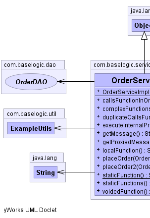

com.baselogic.service
Class OrderServiceImpl
java.lang.Object
 com.baselogic.service.OrderServiceImpl
com.baselogic.service.OrderServiceImpl
- All Implemented Interfaces:
- OrderService
@Component
public class OrderServiceImpl
- extends Object
- implements OrderService
ExampleService with hard-coded input data.
-
-
|  |
 |
| Methods inherited from class java.lang.Object |
clone, equals, finalize, getClass, hashCode, notify, notifyAll, toString, wait, wait, wait |
OrderServiceImpl
public OrderServiceImpl()
staticFunction
public static String staticFunction()
callsFunctionInOrder
public String callsFunctionInOrder()
complexFunctions
public String complexFunctions()
duplicateCallsFunction
public String duplicateCallsFunction()
executeInternalPrivate
public String executeInternalPrivate()
getMessage
public String getMessage()
- Reads next record from input
- Specified by:
getMessage in interface OrderService
getProxiedMessage
public String getProxiedMessage()
localFunction
public String localFunction()
placeOrder
public Order placeOrder(Order order)
- Specified by:
placeOrder in interface OrderService
placeOrder2
public Order placeOrder2(Order order)
staticFunctions
public String staticFunctions()
voidedFunction
public String voidedFunction()
true